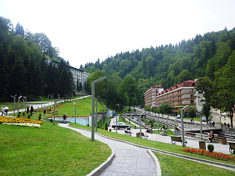

get to know georgia
საირმე — ბალნეოლოგიურ-კლიმატური კურორტი ბაღდათის მუნიციპალიტეტში. მდებარეობს მესხეთის ქედის ჩრდილოეთ კალთაზე. მდინარე წაბლარისწყლის ხეობაში. ზღვის დონიდან 950 მ, ბაღდათიდან 25 კმ. ჰავა რბილია. იცის მცირეთოვლიანი ზამთარი (იანვარში საშუალო ტემპერატურა — 1,0 °C) და ზომიერად თბილი ზაფხული (აგვისტოში საშუალო ტემპერატურა 17,0 °C). ნალექების რაოდენობა 900 მმ წელიწადში.

პირველი წყაროები საირმის წყლების შესახებ XIX საუკუნის 90-იანი წლებიდან გვხვდება. იმერეთში, ერისთავების კუთვნილ ტყეებში, ირმების ამოჩემებული ადგილი პირველად მონადირეებმა შენიშნეს. ხალხში გავრცელებული თქმულებით წყალი დაჭრილ ირმის კვალს ადევნებულმა ძმებმა აღმოაჩინეს. წყარო ჟანგით გადაწითლებულ ქვებზე მოედინებოდა, მის გარშემო კი ყველაფერი მარილს გადაეთეთრებინა. ირმის ჯოგები მარილს და წყალს მორიგეობით ეტანებოდნენ. ამიტომაც იქაურობას საირმე უწოდეს.
ადგილს ყურადღება მწყემსებმაც მიაქციეს და კიდევ ერთი უჩვეულო რამ აღმოაჩინეს — ირმების წყაროდან დაახლოებით 3 კმ-ის მოშორებით, ერთ ადგილას ბალახი მუდამ მწვანე რჩებოდა. თოვლი არ დებდა, მიწა კი წვიმის მოსვლიდან რამდენიმე წუთში გამშრალი იყო. „ჯადოსნური“ ველის საიდუმლოს ფარდა 20-იან წლებში აეხადა, როცა გეოლოგებმა მიწის სიღრმეში ცხელი მინერალური წყალი აღმოაჩინეს.
1930-იან წლებში საირმეს კურორტის სტატუსი ოფიციალურად მიენიჭა. აშენდა პირველი სანატორიუმები. დაიწყო ინფრასტრუქტურის გამართვაც. 40-იან წლებში დასრულდა საავტომობილო გზის მშენებლობაც რომლითაც კურორტი ქალაქ ბაღდათს (მაშინდელ მაიკოვსკის) საავტომობილო გზით დაუკავშირდა.
სამკურნალო ფაქტორია „ნარზანის“ ტიპის ნახშირმჟავა ჰიდროკარბონატული კალციუმ-ნატრიუმიანი (წყარო № 1 და № 3) და „ბორჯომის“ ტიპის ნახშირმჟავა ჰიდროკარბონატული ნატრიუმიანი (ბურღილი № 4 და № 5) მინერალური წყალი „საირმე“. საირმეში არის სასტუმრო და საკურორტო პოლიკლინიკა. სეზონი გრძელდება მთელი წლის განმავლობაში. კურორტი სამხრეთ-აღმოსავლეთიდან უკავშირდება ბორჯომ-ხარაგაულის ეროვნულ პარკს. საირმესთან ახლოს მდებარეობს შედარებით მცირე საკურორტო ადგილი ზეკარი.